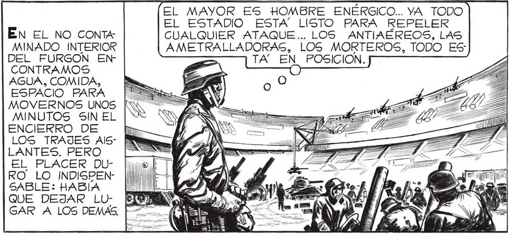

110 ES CURIOSO CÓMO TODOS ESTOS TAN POCO NOS HAN TENIDO EN CUENTA LOS INVASORES QUE NI SE CUIDAVERDADEROS RON DE EQUIPAR CON LANZARRAVOS A LOS “CASCARUDOS” AQUI APOSTADOS. EL MAYOR ES HOMBRE ENÉRGICO... YA TODO EL ESTADIO ÉN EL NO CONTA MINADO INTERIOR DEL FURGON ENCONTRAMOS AGUA, COMIDA, ESPACIO PARA MOVERNOS UNOS MINUTOS SIN EL ENCIERRO DE Dv LOS TRAJES Als- E LANTES. PERO EL PLACER DURO” LO INDISPENSABLE: HABÍA HOMBRES QUE HACE DOS DIAS NI NOS CONOCIAMOS SIQUIERA, FOR-. MAMOS AHORA UN CUERPO ORGA NICO, RESUELTOS TODOS A JUGAR SE A FONDO CONTRA EL ii CUALQUIER ATAQUE... LOS ANTIAÉREOS, LAS AMETRALLADORAS, LOS MORTEROS, TODO ES: ¿QUIERE DECIRME USTED, MAYOR, CÓMO HABRIAMOS TOMADO EL ESTADIO SI LO MHUBIERAN DEFENDIDO CON LANZARRAVOS ? N My : Los DEJÉ CON MA ESTRATÉGICO. EL CABO AMAYA ME LLAMABA. ESTA" LISTO PARA REPELER TA za POSICION. EL ÚNICO HOMBRE QUE YO CONOCIA YA DE ANTES, ES FAWALLI. PERO DESPUES DE TODO LO QUE HEMOS FPASADO, TAMBIEN ME PARECE CONOCER DE SANESE AL MAYOR...Y AL CAPITAN ... HASTA LA ARTILLERÍA PESADA ES! TA YA LISTA. DESPUÉS DE TODO, ESTO ES BASTANTE RECONFORTANTE ... NO SERÁ FACIL VENCERNOS, POR MAS LANZARRAYOS ¡ADELANTE, TENIENTE! EL” BOU : DOIR” ES VENGA, TENIENTE. EL MAYOR ORDENO” QUE USTEDES, LOS QUE INTERVF NIERON EN EL ÚLTIMO COMBATE, SEAN LOGS PRIMEROS EN PODER QUITARSE EL TRAJE POR UN RATO, PARA COMER, BEBER, LAVARSE Y TODO LO DEMAS. ¿QUÉ LE PARECE2 ¡QUE NO PODRÍAN DARNOS UNA CONDECO: RACIÓN MAS VALIOSA ! ¿QUIÉN SABE ? ¡QUIZA TODO NO ESTA PERDIDO AÚN! HASTA AHORA PENSE SIEM PRE LO PEOR.PERO, PUESTO MÁS SIN EMBARGO, NO OPTIMISTA. HAS” | NOS HA IDO TAN MAL. h TA EL TRAJE EA = SÍ AISLANTE NO > ME PARECIO YA TAN INCOMO: DO. TANTA, CAL HASTA PUDE EXAMINAR CON OJOS NUEVOS IN LO QUE ME Y RODEABA. EL PASO POR EL FURGON ME HABÍA QUE_ TRAIGAN..A PABLO TAMBIÉN LO CONOCI DE ANTES. PERO RECIÉN AHORA SE CÓMO ES EN VERDAD... TODO EL CORAJE QUE HAY DENTRO DE ESE CUERPO QUE TODAVÍA DEBE - CRECER. ( ALLÍ ESTA MOSCA, EL HISTORIADOR... VA ME LO CONOZCO TAN DE MEMORIA COMO SI HUBIERAMOS IDO JUNTOS AL COLEGIO. Y ESO QUE APENAS HACE UNAS HORAS QUE LO VI POR PRIMERA
